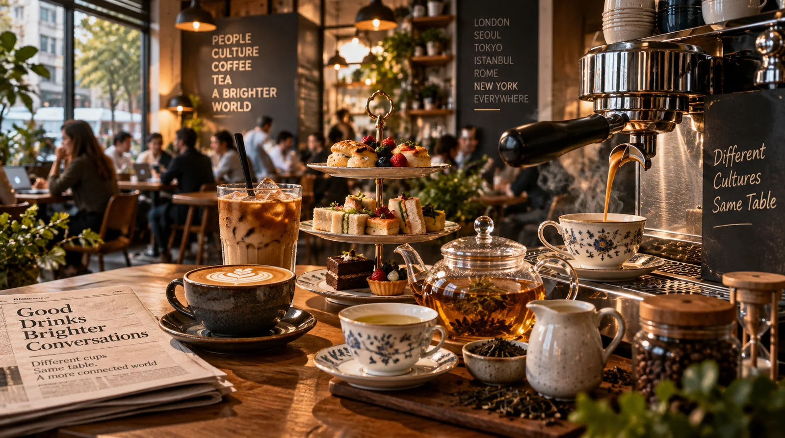
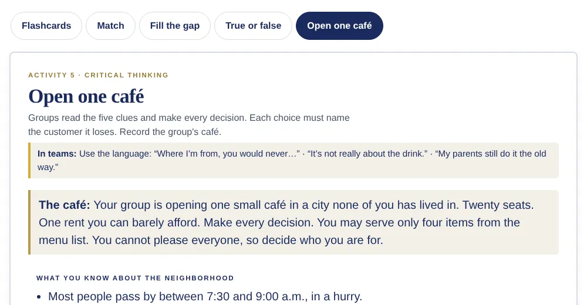
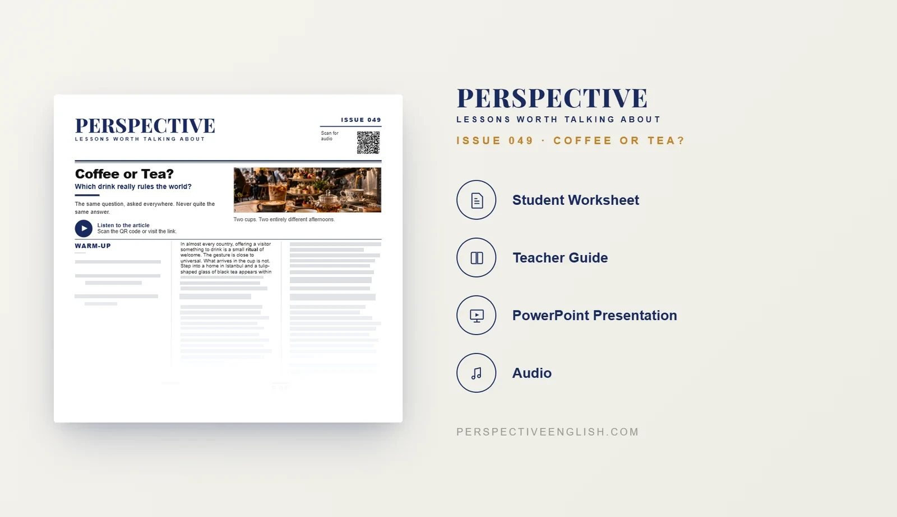

ISSUE 049
Coffee or Tea?
Which drink really rules the world?
A ready-to-teach B1–B2 ESL lesson exploring coffee and tea culture, globalization, café habits and the surprising ways two ordinary drinks can reveal how people live, socialize and see tradition.
CHOOSE YOUR LEVEL

FREENO SIGN-UP · NOTHING TO INSTALL
Try the Free Interactive Practice Room
Five activities from this lesson. Practice solo, project it in class with team votes, then see what the world thinks.

Get this lesson
Instant download. No account needed.
COLLECTION 09
5 lessons, Issues 046–050
School Daze · Seasonable Doubt · Same Same, But Different · Coffee or Tea? · Many Moons Ago Special
- Download straight after paying
- Secure checkout through Payhip
- No sign-up, no subscription
- Use it with all your own classes
IN EVERY LESSON DOWNLOAD
LESSON PREVIEW

ABOUT THIS LESSON
About This Coffee and Tea ESL Lesson
Coffee or tea? It sounds like one of the simplest questions in the world, but the answer can reveal a surprising amount about culture, history and everyday life. This B1–B2 ESL lesson explores the different ways people drink coffee and tea around the world and asks what those habits say about the places we live.
Students travel from Turkish tea glasses and standing espresso in Milan to British tea, American takeaway coffee and South Korea's long café sessions. The article also looks at how trade, empire and globalization carried both drinks far beyond their origins while local cultures continued to shape how, when and why people drink them.
Students then discuss their own habits, design a café for a changing neighborhood in the Open One Café critical-thinking task, and explore the tension between tradition and changing tastes through an interview with the owner of a closing tea house and the young café owner opening next door.
FROM THE ARTICLE
WHAT'S INCLUDED
What's Included in This Coffee or Tea? ESL Lesson?
- Magazine-style B1–B2 ESL student worksheet
- Original reading and matching audio about coffee and tea traditions, globalization and local café habits
- Five vocabulary-matching items and five true-or-false comprehension questions
- Five discussion questions about drinks, café culture and changing traditions
- Open One Café critical-thinking challenge: use five neighborhood clues to choose four menu items, set prices and decide which customers to serve
- Language in Context: ritual, distinctive, linger, adopt and status
- Speaking challenge: interview the owner of a closing 80-year-old tea house, then switch to the young owner of a modern café opening next door
- 150–200 word opinion-writing task about what a country's favorite drink reveals about how its people live
- Teacher guide, answer key and model writing
- Ready-to-use classroom presentation
GET THE COMPLETE LESSON
Ready to Teach Coffee or Tea?
Get the complete Coffee or Tea? ESL lesson individually, or get Issues 046–050 together in Collection 09.
Secure checkout and instant digital delivery through Payhip.